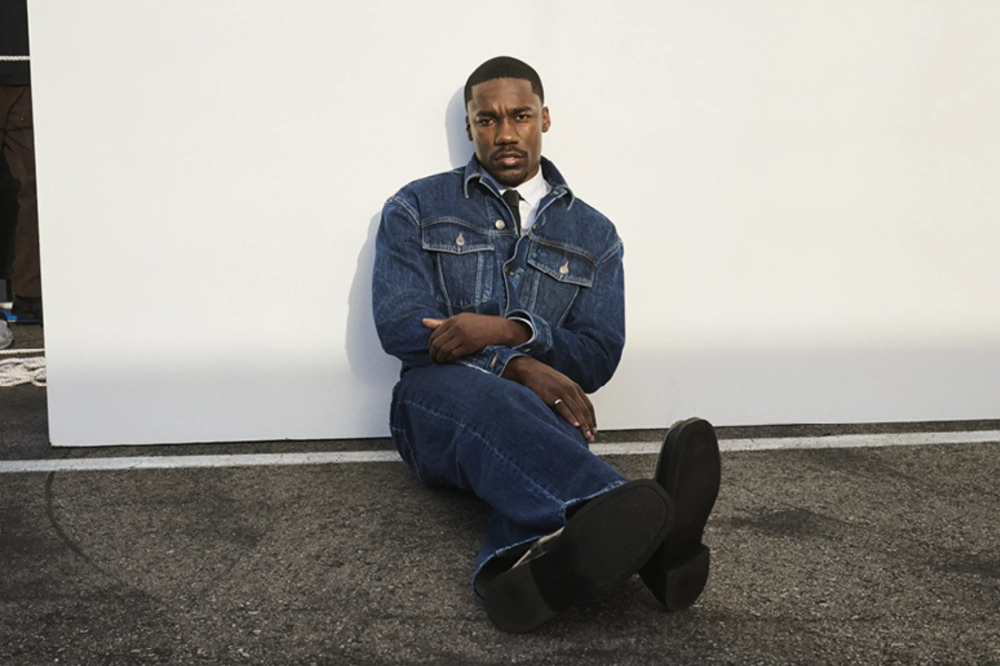

BELOVED
GIVĒON

GIVĒON
Giveon (stylized as GIVĒON) is an American R&B singer-songwriter born Giveon Dezmann Evans on February 21, 1995, in Long Beach, California. He is globally celebrated for his rich baritone vocals and deeply emotional lyricism, rising to prominence with his feature on Drake’s 2020 hit "Chicago Freestyle" and his 5x platinum solo hit "Heartbreak Anniversary"
Beloved is the second studio album by American singer-songwriter Giveon. Released through Epic Records and Not So Fast on July 11, 2025, production was handled by a variety of record producers, including Matthew Burnett, Jahaan Sweet, Gitty, Sevn Thomas, and Maneesh. Beloved was preceded by two singles, "Twenties" and "Rather Be". It debuted and peaked at number eight on the Billboard 200 and at number four on the Billboard Top R&B/Hip-Hop Albums chart, and received generally favorable reviews. On April 10, 2026, Giveon announced a deluxe version of the album, subtitled Act II, was released on May 15, 2026.